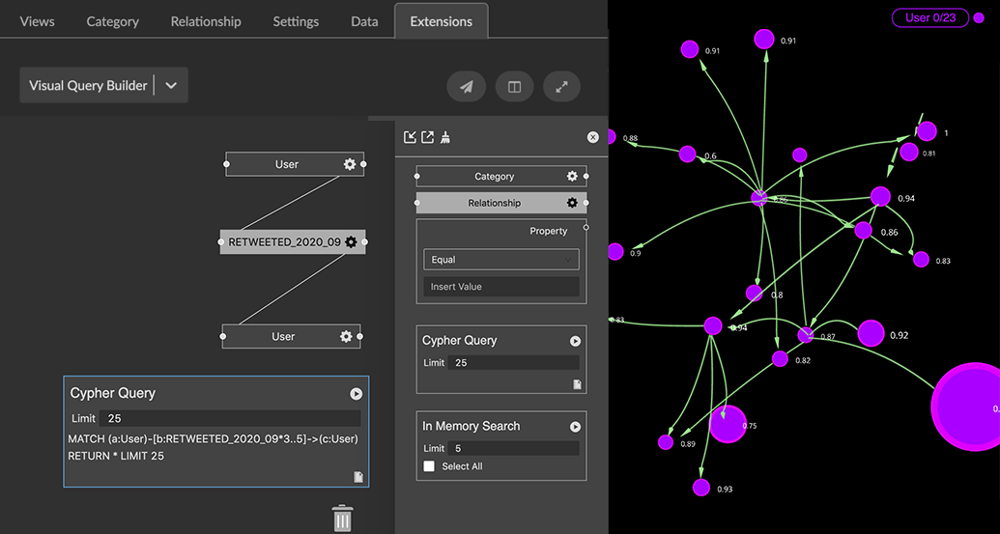

Visual Query Builder The Visual Query Builder extension lets you build no-code Cypher queries from within a GraphXR project. You connect visual blocks that represent category, relationship, and property values to form a graph pattern, automatically generate a Cypher query, and run it. Once you’ve run the query, you can use the In-Memory Search function to find and select patterns in the returned data. You can enter and run any Cypher query in GraphXR’s Query panel. But with Visual Query Builder, you can start using Cypher’s most useful graph pattern-matching functions right away, which lets you explore your graph data much more quickly and easily. To quickly connect Neo4j with GraphXR, download Neo4j Desktop and follow the steps to add GraphXR as a graph app onto Neo4j. Cypher and Pattern Matching Cypher, developed by Neo4j, is a query language for selecting, presenting, and transforming graph data, and for managing a graph database. Patterns Visual Query Builder can match Visual Query Builder focuses on Cypher’s capability to match patterns and return data as nodes and edges. This type of Cypher query is generally structured as follows: Cypher Description MATCH (a:Category) - [b: RELATIONSHIP] -> (c:Category) …etc. Match (i.e., find) specified graph patterns, usually based on category labels and relationship labels and directions. Multiple MATCH statements can be used to query for branched patterns. Note: Although you can specify property values in a MATCH statement, a WHERE clause is usually used. WHERE a.PropertyName1 = Value AND …etc. Qualifiers based on property values in the specified nodes and edges. To match values, Visual Query Builder provides Equals, Greater Than, Less Than, Like, or In operators. RETURN * LIMIT 25 Return matching nodes and edges, optionally limiting the number of nodes returned. To learn and use additional Cypher capabilities such as specifying ranges of values, returning property data as tables or lists, merging or parsing data, creating new nodes and edges, and managing and tuning query performance, see Neo4j’s free learning resources, including: Cypher Classroom training, Cypher Online training, and Hands-on in Sandbox guides (use command :play cypher) From Visual Query to Cypher A basic Cypher query on the Neo4j open source Movie database is shown below. It finds patterns where a Person node whose name property value includes “Tom” has ACTED_IN a Movie, and returns the first 25 found: MATCH (a:Person)-[b:ACTED_IN]-(e:Movie) MATCH (a:Person)-[d:DIRECTED]-(e:Movie) WHERE a.name =~ ".Tom." RETURN * LIMIT 25 To build this query in Visual Query Builder, you use Person and Movie Category blocks and connect them through sockets to an ACTED_IN Relationship block. You then specify the name property by connecting a Property block to the Person Category block through property sockets, as shown below: Once you’ve built a query, you can copy it to the clipboard, and paste it into GraphXR’s Query panel and Cypher tab. This enables you to save, edit, and even extend your query by using additional Cypher functions not available in Visual Query Builder. Cypher query capabilities such as CREATE or MERGE are only available if the correct user privileges are set in Neo4j. Building Visual Queries Visual Query Builder provides the workspace and building blocks to build and run a Cypher query (or In-Memory Search) for graph patterns based on categories, relationships, and their properties. You can: Build and run a Cypher query: Click a Category, Relationship, or Property building block to add it to the workspace, select its available specifications, and connect the building blocks using the provided sockets. You can query for patterns in just one category of nodes, or one that links any number of categories and directed relationships. Click the Cypher Query block at any time to see the query being built. In its Limit field, you can edit the number of nodes to return. When the query is built, click its run arrow to run the query. Modify an existing query. Use In Memory Search to find and highlight subgraphs in the returned data. Export and import visual queries as JSON files. We’ll build visual queries on the Neo4j Movies database available through the GraphXR demo project VQB Movies. It includes Person, Movie, and Distributor categories, linked by relationships including ACTED_IN, DIRECTED, and REVIEWED. To explore the project, log in, go to the Project>Data tab, and load a saved data view. Build a query on a single Category A simple pattern is one that looks for specific nodes of only one category. The following example shows a query for Person nodes whose name property includes “Tom”. To build a visual query on a single category: Log in to GraphXR, and click to open the VQB Movies Demo project. In the Projects panel and Extensions tab select Visual Query Builder from the dropdown menu. Click the Cypher Query block to add it to the workspace and view the query as it’s being built. You can add the Cypher Query block at any time. Click a Category block to add it to the workspace, click its settings icon, and select the Person label. We’ll query for a specific name, so click its name property and click OK. Now click to add a Property block. We use it to specify the name of a person (e.g. “Tom”). Click and drag to connect its socket to the name socket on the Person block. On the Property block, select Like from the dropdown menu, and enter Tom. Click the run arrow on the Cypher Query block. Four matching Person nodes are returned to the project space. Build a query on a multiple Categories, Relationships, and properties A more complicated pattern can specify more than one category and their properties, as well as multiple relationships of interest. The following example shows a query for Person nodes with a name that includes “Tom”, who ACTED_IN a Movie that was released after 1990. To build a visual query for multiple category and relationship patterns: Open Visual Query Builder. Click the Cypher Query block to add it to the workspace so that you can view the query as it’s being built. You can add the Cypher Query block at any time. Click two category blocks and a relationship block to add them to the workspace. Click the settings icons on the category blocks and set them as follows: Person, with the name property selected, then click OK. Movie , with the released property selected, then click OK. If you are starting from the previous simple query, just add one more category block. Click the settings icon on the relationship block, and set it to ACTED_IN. Click and drag between the white sockets to connect the category and relationship blocks. Click to add two Property blocks, and click and drag to connect their property sockets as follows: To the name socket on the Person category block (if not already connected). Then select Like from the dropdown menu and enter Tom. To the released socket on the Movie category block. Then select Greater than from the dropdown menu, and enter 1990. Click the run icon on the Cypher query block. If the query does not load, or returns unexpected results, see Troubleshooting. Saving and sharing a Visual Query You can save and share a visual query by exporting (or importing) it as a .JSON file. When you re-enter a project after exiting, you can then re-load the visual query into Visual Query Builder. This also lets you share a visual query with another user. To save a visual query: Click the Export icon at the top of the building blocks list. A .JSON file is exported to your system and appears in your browser’s Downloads tab. To import a visual query: Open the Visual Query Builder, and in the building blocks panel, click the Import icon at the top of the building blocks list. Navigate to the .JSON file (typically, in your Downloads), select it and click Open to import it to the workspace. You can click the document icon at the lower right of the Cypher Query block to copy the Cypher query to the clipboard. Unlike .JSON export, this copies the Cypher query but does not preserve the visual building blocks. This can still be useful if you want to edit or extend a query quickly in GraphXR. From the clipboard, you can paste the query (Ctrl+V)into GraphXR’s Query>Cypher panel. Click the plus icon to save the query before you edit it further. Editing a Visual Query Once you’ve built and run a visual query you can continue to add and connect more building blocks, or remove blocks by dragging them to the Trash can icon at the lower right. The query in the Cypher Query block is immediately updated. To delete an entire query and start over with an empty workspace, click the Clear icon located to the right of the Export icon at the top of the building blocks panel. Using In Memory Search Once graph data have been returned to GraphXR, you can also find and select subgraphs. Simply build (or import) a visual query and use In Memory Search, instead of the Cypher Query block. Subgraphs can be single nodes, as in this query for any Twitter user with a screen_name like “Jeff”… or connected nodes, as in this query for influential users connected through a specific RETWEETED relationship: The nodes returned to the search list are labeled with the caption you set in the GraphXR Project>Category panel. This may be (but isn’t necessarily) the property name you used in the query pattern. You can change the caption at any time. To run an In-Memory Search: In this example a node for each county in the United States has been imported to the GraphXR project space. To query for the counties in a particular state, we first click the In-Memory Search block to add it to the workspace. Increase the value in the Limit field to return more than the default 5 subgraphs. Click the run arrow at the top right of the block. A list of matching nodes is displayed. Click an item on the list to select the node or pattern in the graph space. Or, click Select All to select all the patterns on the list. With the data selected, other GraphXR functions can be used. For example, you can Tag a selection, or use Inverse to select and then temporarily Hide or Delete all the other data. Case Study: Visual Queries for Social Media Research Example visual queries were built on Twitter data collected for Kineviz' Elections 2020 project. In addition to Twitter Users, this Neo4j database includes: Tweets and the Media tweeted. RETWEETED relationships were created between Users for several months of the 2020 US election cycle. Additional generated properties including User properties such as gender, age, race, language used, and the probability that the user is a bot, as well as Tweet properties such as flags for fake news and hate speech. Query on Influential Twitter Users This query is for influential Twitter users who are probably bots and who have retweeted to other influential users in a particular month. In the Neo4j graph data connection is through relationships of the form RETWEETED_YYYY_MM. Influential bot users are those with a followers_count property value greater than 20,000 and a boto_prob (i.e. calculated probability) of 0.90 or greater. Query for linkage between nodes Since graph data is often used to model complex connections (for example between people or ideas, time series, or spatial patterns), it can be interesting focus on chains of connected nodes. We can query for such a pattern by setting a length in the settings of a Relationship block. The length setting provides a dropdown menu and text boxes for entering a number: equal. Enter a whole number. Returns nodes connected via up to that number of the specified edge. (e.g. enter '3' to return nodes with 1, 2, or 3 of the specified connections). greater than. Enter a whole number. Returns nodes with that number or greater of connections via the specified edge. (e.g. enter '3' to return nodes with 3 or more of the specified connections) between - Two text boxes appear. Enter the lower and higher number to return nodes with that range of the specified edges. (e.g. enter 2-5 to return nodes with 2, 3, 4, or 5 of the specified edge.) On the Twitter data, we could query for Users who retweeted to one another during September 2020 (i.e., with the relationship RETWEETED_2020_09) and are 3 to 5 hops to other Users via that relationship. The Cypher query now includes the length in the MATCH statement as a property of the relationship, as follows: MATCH (a:User)-[b:RETWEETED_2020_09*3..5]->(c:User)  Visual Query Builder Quick Reference To… Action Add a block to the workspace. Click the block. Move a block. Click and drag. Connect a block. Click a socket and drag the line to another socket. Disconnect a block. Click the socket a line is connected TO, and drag the line off. Delete a block or query. Click and drag to the Trash can. Clear the workspace of all blocks and queries. Click the Clear (brush) icon at the upper left side of the block selector panel. Set a Category or Relationship label. Click the settings icon on the Category or Relationship block and select a label. Set a Relationship direction. Click the settings icon on a Relationship block, click the Advanced dropdown, then the Select Direction menu and select Right. Specify a Property value. Click the dropdown menu on the Property block to select an operator (Equals, Greater Than, Less Than, Like, or In) and enter the value in the text box. Run a visual Cypher query. Click the run arrow on the Cypher Query block. Run an In-Memory Search After running a visual query in the workspace, click the In-Memory Search block and its run arrow. Export a visual query. Click the Export icon at the top left of the block selector panel. Import a visual query. Click the Import icon at the top left of the block selector panel, navigate to the .JSON file and click to open. Zoom in or out on the workspace. Use the mouse wheel. Reposition the entire visual query. Click on the workspace and drag. Dismiss the block selector panel. Click the X icon at the upper right of the panel. Display Visual Query Builder as a split screen or a full screen. Click the Split Screen or Full Screen icon at the upper right of the Extensions panel. While building a query, you can click the split screen or full screen icons at any time to expand the workspace. Display Visual Query Builder in a separate window. Click the Airplane icon at the upper right of the Extensions panel. The query you are building will persist, and will also persist if you close the separate window and re-open Visual Query Builder in the Extensions panel. Troubleshooting Visual Queries Common Issues Issue Possible Resolution An error message indicates that a connection to the server was not established. Most likely, the Cypher query is not well-formed. Check that you’ve actually connected the blocks, entered valid property values, and that the query has a valid number for the LIMIT. The query loads but does not return any results. If a query does not return results, but you know that matching data exist in the database, verify that entries for property values are spelled correctly, and that you have chosen the correct Property operator: • Greater Than and Less Than operators accept only numerical values • Like accepts text strings. • Equals and In accepts either text strings or numerical values. The values will be matched exactly. Equals accepts a single value. For In, you can enter a list of comma-separated values (no leading space, no quotes). Spaces after a comma are ignored (i.e. right,left,up,down returns the same results as right, left, up, down). Visual Query Builder Limitations While you can specify many patterns using Visual Query Builder, some Cypher pattern matching functionality is not currently implemented, including: OR syntax in MATCH or WHERE statements. The path variable in a MATCH statement. It refers to an entire pattern, which lets you refer to a complex set of connections as a single entity, and then apply property specifications to filter only those paths that qualify. Ranges of values in a WHERE statement (for example: a.property > 100 < 1000). Currently there is one socket for each property value, for which one operator can be selected.